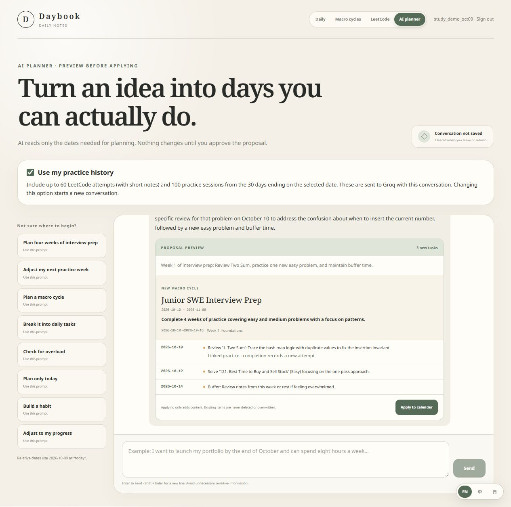
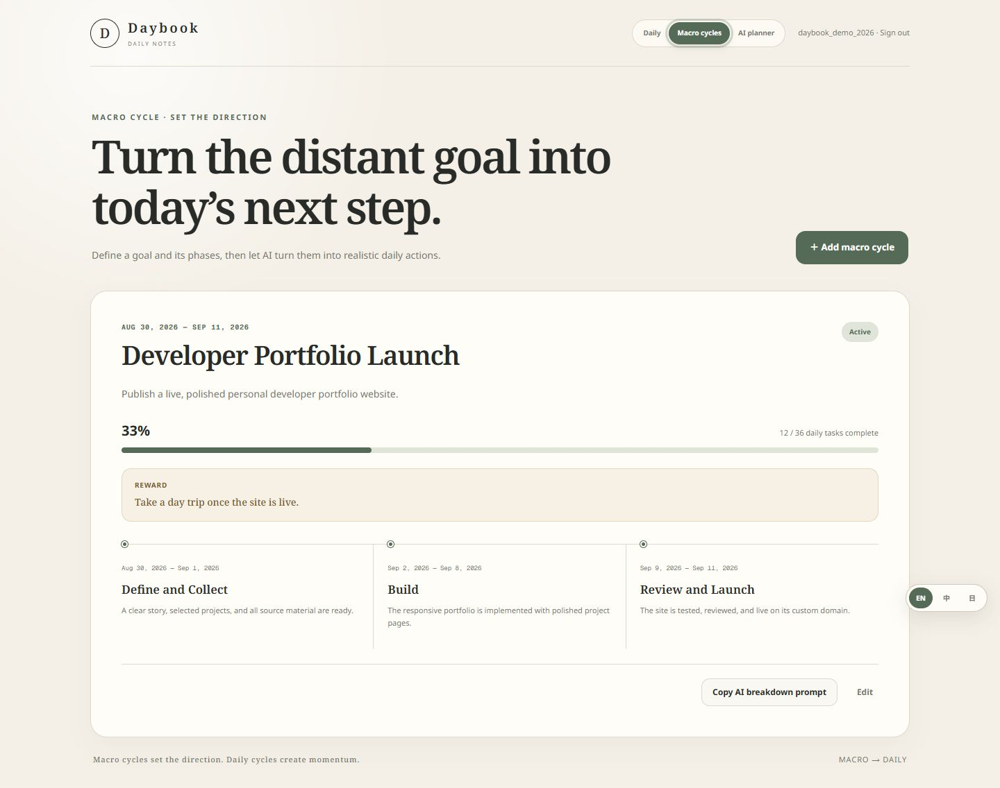
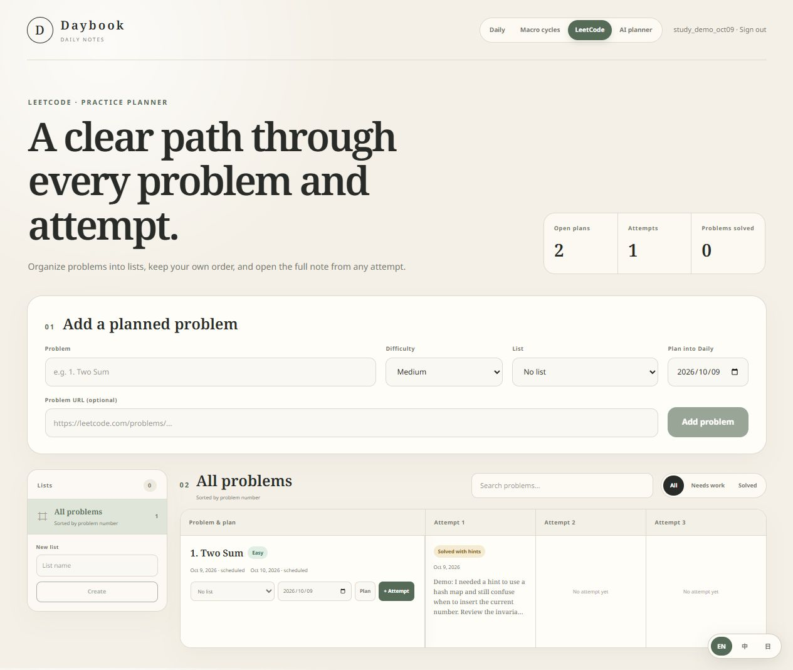

“I needed a hint.”
Two Sum: the hash map idea made sense, but when to insert the current number was still unclear.
Record the outcome and one useful note.AI-assisted interview preparation
A fixed problem list cannot tell you what to revisit after getting stuck. Daybook connects your LeetCode attempts with your calendar, so you can review an AI-proposed week that fits your deadline, available time, and recent practice.
Web app · English, 繁體中文 & 日本語 · Independently built in Taiwan

For students and early-career developers
Set an interview goal and a weekly time budget. Record whether you solved each problem independently, needed a hint, or got stuck. Use those notes to decide what deserves another session before adding more new problems.
An illustrative study week · not a promised outcome
Two Sum: the hash map idea made sense, but when to insert the current number was still unclear.
Record the outcome and one useful note.Instead of rushing to a harder problem, ask for a short review of the invariant and a trace with duplicate values.
Read the explanation. Check the time estimate.Approve a linked practice session. Record the next result, then ask for another plan when your week changes.
Existing work stays in your calendar.From intention to daily action
Start with a goal, keep a record of the work, then ask for your next week. The screenshots below show real Daybook screens with demo data.
Describe your target role, deadline, current level, and available hours. Ask the AI planner for four-week phases and a realistic first week, with time for review and unexpected work.

Keep problems in lists and record each attempt: stuck, solved with hints, solved independently, or review passed. A linked practice task opens the attempt form when you complete it, keeping the next review connected to the same problem.

Enable “Use my practice history” and ask “Adjust my next practice week.” The planner receives recent attempts and practice sessions alongside relevant calendar context. It is instructed to explain reviews using dated attempts, account for missed sessions, and leave room in your time budget. Review the suggestions and estimated durations before applying. Existing tasks are preserved; Daybook does not automatically move or delete them.
Read how AI planning worksBehind Daybook
Daybook is an independent software project developed by Po-Yu Pan, a developer based in Taiwan. Development began in August 2026. The app is available online, and its source and development history are public.
Questions about your study workflow or a feature? Reach the developer at hi@matthiola.dev.
Daily planning, account sign-in, cloud sync, and goal cycles.
Proposal previews, recurring tasks, habit details, and three interface languages.
Short cycles with deadlines and improvements to mobile scrolling.
Opt-in attempt history, linked review tasks, and prompts for four-week interview preparation.
A few useful details
Yes, to use the app. Sign in with Google or create a username and password. This product tour is public and requires no account.
Calendar data is scoped to your account and syncs across devices. Practice history is opt-in: up to 60 attempts with short notes and 100 practice sessions from the 30 days ending on the selected date are sent to Groq with your conversation and relevant calendar context. Read the app’s privacy policy for details before using it.
AI interprets your practice notes and proposes what to review, with reasons and estimated study times. The app handles dates, progress, and saving your approved plan. Suggestions may be wrong, so you review them before applying. The current AI provider is Groq. Claude is a planned evaluation, not an available integration.
Email hi@matthiola.dev or open an issue in the public repository. Please do not include private calendar content in public issues.
One page a day
依實際作答紀錄，安排下一週做得到的面試練習。